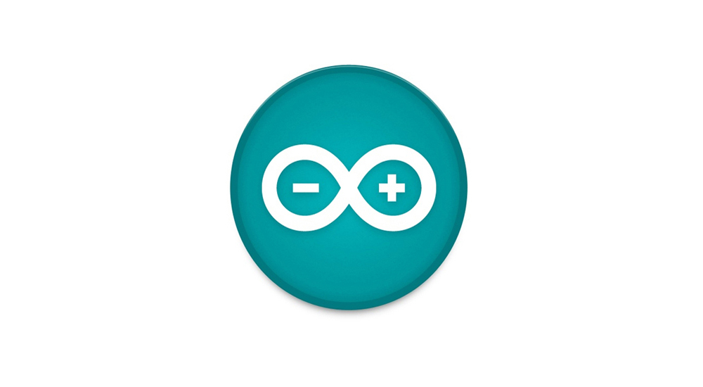

The Arduino microcontroller is an easy to use yet powerful single board computer that has gained considerable traction in the hobby and professional market. The Arduino is opensource, which means hardware is reasonably priced and development software is free. This guide is for students in ME2011, or students anywhere who are confronting the Arduino for the first time.For advanced Arduino users, prowl the web; there are lots of resources. The Arduino project was started in Italy to develop low cost hardware for interaction design. An overview is on the Wikipedia entry for Arduino.
